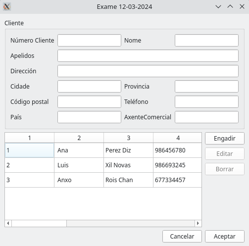

MANUAL¶
CLASE MODELO TABOA¶
Clase Modelo Taboa:
class ModeloTaboa(QAbstractTableModel):
def __init__(self, datos):
super().__init__()
self.datos = datos
def rowCount(self, index):
return len(self.datos)
def columnCount(self, index):
return len(self.datos[0])
def data(self, index, role=Qt.ItemDataRole.DisplayRole):
if index.isValid():
if role == Qt.ItemDataRole.DisplayRole or role == Qt.ItemDataRole.EditRole:
value = self.datos[index.row()][index.column()]
return str(value)
def setData(self, index, value, role):
if role == Qt.ItemDataRole.EditRole:
self.datos[index.row()][index.column()] = value
return True
return False
Esta clase hereda de QAbstractTableModel para crear el modelo al que se va asociar la tabla.
CLASE FIESTRA PRINCIPAL¶
Tiene el contenido que se muestra en la ventana saliente cuando se ejecuta el programa. El objetivo del programa es generar un informe con una tabla con datos asociados a la base de datos de la tabla Clientes
METODOS DE CLASE FIESTA PRINCIPAL¶
Son los siguientes:
on_btnEngadir_pressed(self):
on_btnEditar_pressed(self):
on_btnBorrar_pressed(self):
on_btnAceptar_pressed(self):
on_btnCancelar_pressed(self):
on_modelo_selectionChanged(self):
cargarCamposDendeSeleccion(self):
def borrarCampos(self):
on_botonGenerarFactura_clicked
TABLA DEL FORMULARIO¶
1 |
2 |
3 |
4 |
|---|---|---|---|
1 |
Ana |
Perez Diz |
986857470 |
2 |
Luis |
Xil Novas |
985628291 |
3 |
Anxo |
Rois Chan |
6748294759 |
IMAGEN DEL FORMULARIO¶
LISTA DESORDENADA DE LA FICHA DEL CLIENTE¶
Número Cliente: 1
Nome Cliente: Ana
Apelidos: Pérez Díaz
Direccion: Garcia Barbón
Cidade: Vigo
Provincia: Pontevedra
Código postal: 36201
Teléfono: 986456780
País: España
Axente Comercial: 1
MODULO CONEXIONBD¶
METODOS DE CONEXION_BD¶
engadeRexistro:
def engadeRexistro(self, insertSQL, *parametros):
"""Realiza una inserción en la base de datos utilizando los parámetros especificados.
:param insertSQL: Código de inserción SQL a ejecutar.
:param *parametros: Parámetros para introducir en la inserción.
"""
try:
if self.conexion is None:
print("Realizando inserción: É necesario realizar a conexión a base de datos previamente")
else:
if self.cursor is None:
print("Realizando inserción: É necesario realizar a creación do cursor previamente")
else:
self.cursor.execute(insertSQL, parametros)
self.conexion.commit()
except dbapi.DatabaseError as e:
print("Erro facendo a inserción: " + str(e))
else:
print("Inserción executada")
actualizaRexistro:
def actualizaRexistro(self, updateSQL, *parametros):
"""Realiza una actualización de registro en la base de datos utilizando los parámetros especificados.
:param updateSQL: Código de actualización SQL a ejecutar.
:param *parametros: Parámetros para introducir en la actualización.
"""
try:
if self.conexion is None:
print("Realizando actualización rexistro: É necesario realizar a conexión a base de datos previamente")
else:
if self.cursor is None:
print("Realizando actualización rexistro: É necesario realizar a creación do cursor previamente")
else:
self.cursor.execute(updateSQL, parametros)
self.conexion.commit()
except dbapi.DatabaseError as e:
print("Erro facendo a actualización rexistro: " + str(e))
else:
print("Actualización rexistro executada")
borraRexistro:
def borraRexistro (self, borraSQL, *parametros):
"""Realiza un borrado de registro en la base de datos utilizando los parámetros especificados.
:param borraSQL: Código de borrado SQL a ejecutar.
:param *parametros: Parámetros para introducir en el borrado.
"""
try:
if self.conexion is None:
print("Realizando borrado rexistro: É necesario realizar a conexión a base de datos previamente")
else:
if self.cursor is None:
print("Realizando borrado rexistro: É necesario realizar a creación do cursor previamente")
else:
self.cursor.execute(borraSQL, parametros)
self.conexion.commit()
except dbapi.DatabaseError as e:
print("Erro facendo o borrado rexistro: " + str(e))
else:
print("Borrado de rexistro executado")
CASO DE PRUEBA¶
Nombre del caso de prueba: Inserción de botón GenerarFactura.
Descripción: Este caso de prueba verifica si al pulsar el botón GenerarFactura crea un PDF con una tabla que contenga los datos de los clientes de la base de datos.
Pasos:
Iniciar la aplicación.
Ejecutar el método on_botonGenerarFactura_clicked.
Verificar si se ha creado correctamente el PDF con los datos de la base de datos.
Condiciones de ejecución:
El PDF debe mostrar el formato de tabla indicado en el ejercicio 4.
Deben aparecer tantas tablas como clientes tiene la abse de datos con la información de cada uno.
Resultado esperado: Se espera la creación del PDF con la tablas y la información de cada cliente en ellas.
Estado de prueba: Realizado.
Resultado obtenido: Fallido.
Errores asociados: Se genera una tabla con todos los clientes en vez de una por cliente.
Responsable do deseño de proba: Jorge Amestoy
Responsable da execución da proba: Jorge Amestoy
Comentarios: Intentar ejecutar el método utilizando un while con el número de cliente.